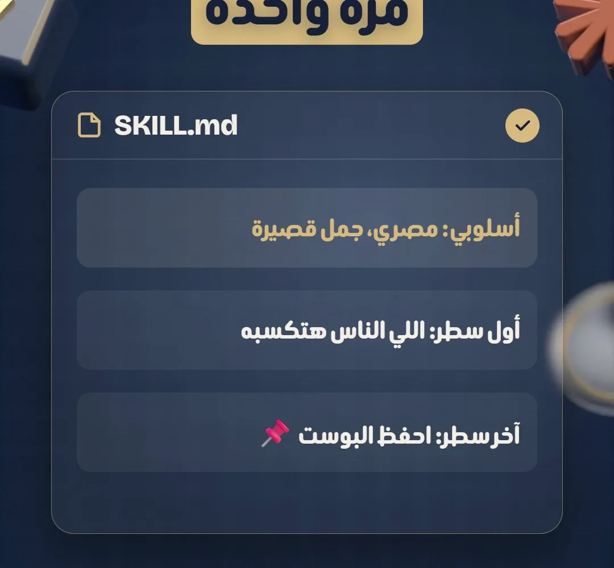
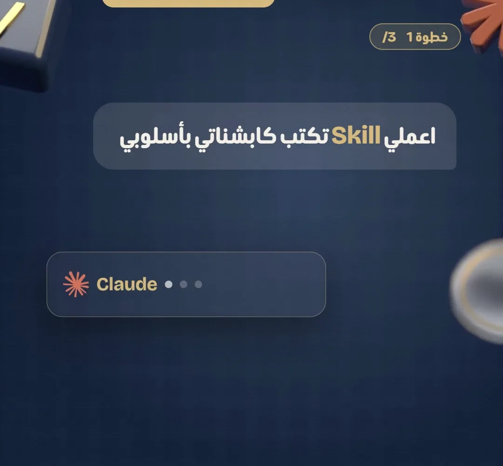
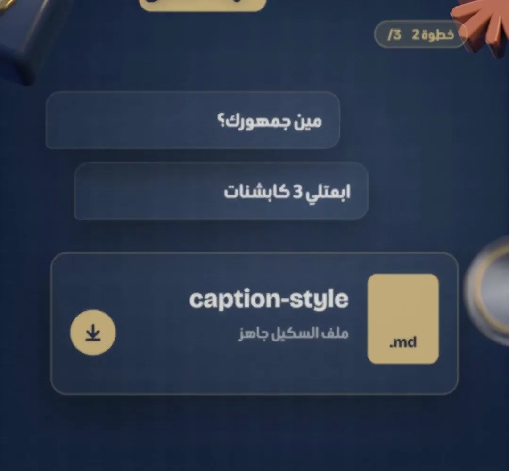
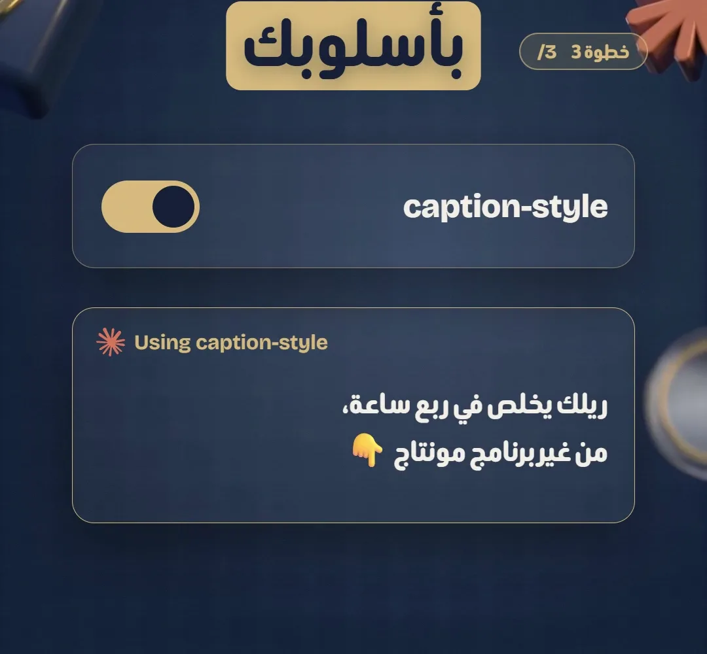
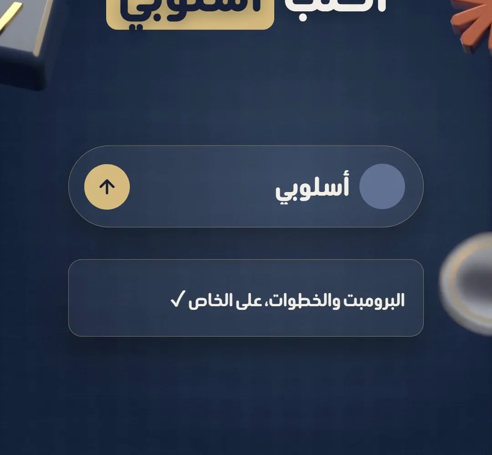

اشرحلــهمرة واحـــدة
بدل ما تلصق نفس البرومبت كل مرة: اعمل Skill بأسلوبك وإنت بتتكلم مع Claude في شات عادي. هو اللي بيكتب ملف SKILL.md، وإنت بتفعّلها مرة واحدة، وبعدها كل كابشن يطلع بأسلوبك.


- 01
يعني إيه Skill؟
الـ Skill ملف تعليمات (اسمه SKILL.md) Claude بيقراه لوحده لما يلاقي الطلب يناسبه. يعني تشرح أسلوبك مرة واحدة، وكل ما تطلب كابشن يستعمله من غير ما تفكّره. الـ Skills متاحة على Free و Pro و Max و Team و Enterprise، ومحتاجة «code execution» يكون شغال.
صفحة Anthropic: Using Skills in Claude ↗
من الريل: ملف SKILL.md فيه أسلوبك - 02
اطلبها في شات عادي
افتح شات جديد في Claude واشرح السكيل اللي عايزها. ولو عندك أمثلة (كابشنات قديمة عجبتك، دليل البراند) ارفعها في نفس الشات. انسخ البرومبت ده وغيّر اللي بين القوسين:
عايز أعمل Skill اسمها caption-style بتكتب كابشنات إنستجرام بأسلوبي. أسلوبي: [مصري، جمل قصيرة، أول سطر هو اللي المتابع هيكسبه، آخر سطر «احفظ البوست 📌»]. جمهوري: [صناع محتوى بيعملوا ريلز]. مرفق 3 كابشنات قديمة عجبتني. اسألني أي حاجة ناقصة قبل ما تكتب الملف.
من الريل: الطلب في شات عادي - 03
جاوب أسئلته
Claude هيسألك عن شغلك: بتستعملها في إيه، وإيه اللي يخلّي النتيجة حلوة. جاوب بتفاصيل كفاية إن حد ميعرفكش يقدر يمشي عليها. بعدها بيكتب ملف SKILL.md وينظّم أمثلتك ويجمّع كله في ملف Skill تحفظه.
شرح Anthropic الرسمي: إزاي تعمل Skill بالكلام ↗
من الريل: كام سؤال، وبعدها ملف السكيل جاهز - 04
فعّلها مرة واحدة
من الإعدادات افتح قسم الـ Skills (في الشرح الرسمي: Settings ← Capabilities ← Skills). هتلاقي مكتبة السكيلز بتاعتك، شغّل السكيل الجديدة. ولو معاك الملف بس: Customize ← Skills ← + ← Create skill ← Upload a skill وارفعه.

من الريل: تشغّلها، والكابشن يطلع بأسلوبك - 05
جرّب وعدّل
اطلب كابشن لريل جديد. لو اشتغلت هتلاقي في تفكير Claude «Using caption-style». لو النتيجة مش زي ما عايز، قوله يعدّل السكيل (مثلاً «خلّي أول سطر أقصر») وجرّب تاني.

من الريل: اكتب «أسلوبي» والبرومبت يوصلك على الخاص
نصايح صغيرة
- السكيل اللي ترفعها على claude.ai مش بتنزل لوحدها في Claude Code، والعكس.
- ابدأ بسكيل واحدة لحاجة بتكررها كل يوم (كابشن، هوك، رد على عميل)، وبعدين زوّد.
- عايز Skills وستايل كامل لبراندك؟ ابعتلي على الواتساب wa.me/971556226197 وأقولك السعر حسب اللي محتاجه.
عايز حد يعملهولك؟
مش فاضي تتعلم وتعمل بنفسك؟ أنا بعمل ريلز لبراندك بنفس الطريقة اللي بشرحها هنا.